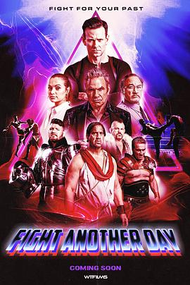

5.3
改日再战
Fight Another Day
2024
加拿大
评分 5.3
导演:
詹姆斯·马克
演员:
詹姆斯·贝鲁什 / 马丁·科夫 / 克里斯蒂娜·奥乔亚 / 埃里克·约翰逊 / 查克·林德尔 / Ken Shamrock / 迈克尔·比斯平
类型:
动作,科幻
剧情简介
警察瑞恩·泰勒因一次直播抓捕行动被枪击昏迷，当他醒来，发现自己已被置于一个充满铁网、冷光和回声的未知竞技场——这里时间被撕裂，历史的战士们被召集，用古代刀剑、近代手枪甚至未来武器胜负开战。瑞恩最初惊慌，他身上的警徽、手铐在这里毫无意义，他只有两条路：战或死。随着一次次残酷对战，他慢慢领悟，这看似娱乐的节目背后，是一场掌控人类命运的阴谋。导演在镜头中频繁切换：古罗马角斗士挥剑、维京人举斧、现代特工扣动扳机——景象交错，观众大喊呐喊。而瑞恩的身份也开始崩塌：他原本的警察角色被节目操作者改写，他的意识被监控器审视，他的每一次胜利都被用于铸造“救世英雄”的神话。当瑞恩发现自己过去的死亡竟是这一切的起点，他必须再次冲进时间裂缝、直面操控者，才能夺回自由。他与一名神秘辅助者伊莎贝尔联手，穿过废墟与血迹，塞进芯片、拆除炸药、揭开节目幕后的主谋中枢。最终，他冲击了时间机器那台闪烁蔚蓝的设备——片刻以为即将回到原点，却发现“回去”只是另一个战场的开始。影片用高强度格斗、冷峻未来废墟、时空跳跃的剪辑，打造出“血战现实电视”的生存惊悚感。瑞恩不再只是警察，而成了被选中、被利用、也最终觉醒的斗士。他在镜头中挥拳、抵抗、质问：“这真是娱乐，还是控制？”而观众则看到：胜利的背后，可能是更深的监控与剥夺。